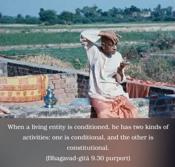
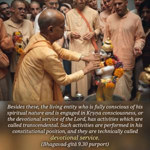

Even if one commits the most abominable action, if he is engaged in devotional service he is to be considered saintly because he is properly situated in his determination.


The word su-durācāraḥ used in this verse is very significant, and we should understand it properly. When a living entity is conditioned, he has two kinds of activities: one is conditional, and the other is constitutional. As for protecting the body or abiding by the rules of society and state, certainly there are different activities, even for the devotees, in connection with the conditional life, and such activities are called conditional. Besides these, the living entity who is fully conscious of his spiritual nature and is engaged in Kṛṣṇa consciousness, or the devotional service of the Lord, has activities which are called transcendental. Such activities are performed in his constitutional position, and they are technically called devotional service. Now, in the conditioned state, sometimes devotional service and the conditional service in relation to the body will parallel one another. But then again, sometimes these activities become opposed to one another. As far as possible, a devotee is very cautious so that he does not do anything that could disrupt his wholesome condition. He knows that perfection in his activities depends on his progressive realization of Kṛṣṇa consciousness. Sometimes, however, it may be seen that a person in Kṛṣṇa consciousness commits some act which may be taken as most abominable socially or politically. But such a temporary falldown does not disqualify him. In the Śrīmad-Bhāgavatam it is stated that if a person falls down but is wholeheartedly engaged in the transcendental service of the Supreme Lord, the Lord, being situated within his heart, purifies him and excuses him from that abomination. The material contamination is so strong that even a yogī fully engaged in the service of the Lord sometimes becomes ensnared; but Kṛṣṇa consciousness is so strong that such an occasional falldown is at once rectified. Therefore the process of devotional service is always a success. No one should deride a devotee for some accidental falldown from the ideal path, for, as explained in the next verse, such occasional falldowns will be stopped in due course, as soon as a devotee is completely situated in Kṛṣṇa consciousness.
Therefore a person who is situated in Kṛṣṇa consciousness and is engaged with determination in the process of chanting Hare Kṛṣṇa, Hare Kṛṣṇa, Kṛṣṇa Kṛṣṇa, Hare Hare/ Hare Rāma, Hare Rāma, Rāma Rāma, Hare Hare should be considered to be in the transcendental position, even if by chance or accident he is found to have fallen. The words sādhur eva, “he is saintly,” are very emphatic. They are a warning to the nondevotees that because of an accidental falldown a devotee should not be derided; he should still be considered saintly even if he has accidentally fallen down. And the word mantavyaḥ is still more emphatic. If one does not follow this rule, and derides a devotee for his accidental falldown, then one is disobeying the order of the Supreme Lord. The only qualification of a devotee is to be unflinchingly and exclusively engaged in devotional service.
In the Nṛsiṁha Purāṇa the following statement is given:
bhagavati ca harāv ananya-cetā
bhṛśa-malino ’pi virājate manuṣyaḥ
na hi śaśa-kaluṣa-cchabiḥ kadācit
timira-parābhavatām upaiti candraḥ
The meaning is that even if one fully engaged in the devotional service of the Lord is sometimes found engaged in abominable activities, these activities should be considered to be like the spots that resemble the mark of a rabbit on the moon. Such spots do not become an impediment to the diffusion of moonlight. Similarly, the accidental falldown of a devotee from the path of saintly character does not make him abominable.
On the other hand, one should not misunderstand that a devotee in transcendental devotional service can act in all kinds of abominable ways; this verse only refers to an accident due to the strong power of material connections. Devotional service is more or less a declaration of war against the illusory energy. As long as one is not strong enough to fight the illusory energy, there may be accidental falldowns. But when one is strong enough, he is no longer subjected to such falldowns, as previously explained. No one should take advantage of this verse and commit nonsense and think that he is still a devotee. If he does not improve in his character by devotional service, then it is to be understood that he is not a high devotee.